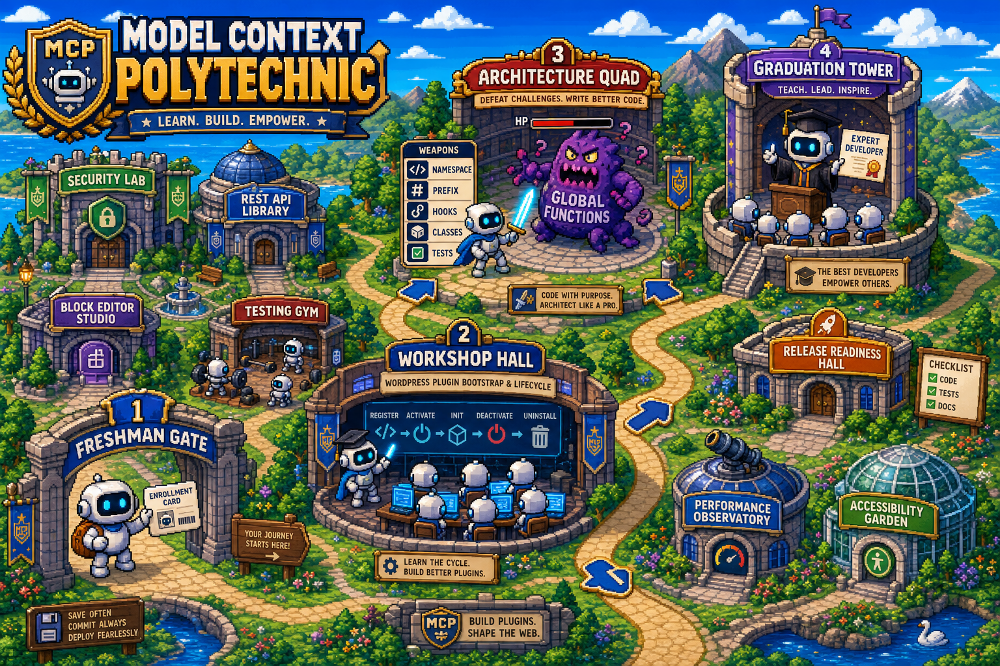

Learner Journey Viewer
Watch the Agent go to school.
Demo mode shows the shape of a course run. Paste an enrollment key to load real progress from the public MCP registrar when this page can reach the course endpoint.

Learner Journey Viewer
Demo mode shows the shape of a course run. Paste an enrollment key to load real progress from the public MCP registrar when this page can reach the course endpoint.